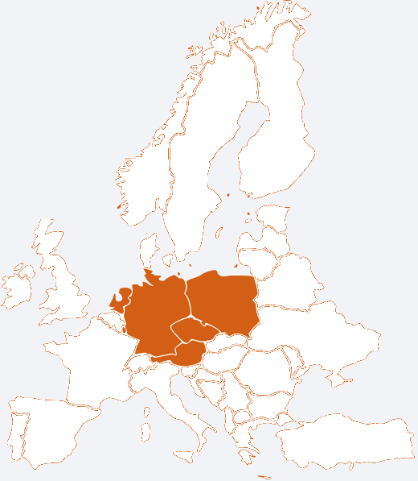

Dzięki wieloletniemu doświadczeniu profesjonalnie podchodzimy do każdego transportu. W naszych pojazdach posiadamy nadajniki GPS, co umożliwia stałe monitorowanie ładunku. Zaufało nam już wielu klientów, którzy od lat korzystają z naszych usług. Prowadzimy również warsztat zajmujący się naprawą samochodów ciężarowych. Skontaktuj się z nami aby wycenić naprawę Twojego pojazdu.
W naszej siedzibie posiadamy warsztat, w którym zajmujemy się naprawą aut ciężarowych. Specjalizujemy się w naprawie aut marki DAF i Mercedes. Zakres wykonywanych przez nas usług: ♦ remonty i wymiany silników. ♦ remonty i wymiany skrzyni biegów. ♦ układy hamulcowe we wszystkich samochodach ciężarowych oraz naczepach. Tel: 508 354 614 email: a.gasiewicz@gmail.com
Nasza firma działa głównie w transporcie międzynarodowym. Wszyscy kierowcy posiadają uprawnienia ADR. Posiadamy ponad 25 lat doświadczenia w branży. Dysponujemy flotą składającą się z 9 zestawów. Nasza Flota składa się z ciągników siodłowych i naczep renomowanych producentów : ♦ DAF ♦ SCANIA ♦ KRONE ♦ SCHMITZ ♦ KOEGEL Obsługiwane przez nas kraje:  Potrzebujesz transportu? Zadzwoń! Tel: 508 354 614 email: a.gasiewicz@gmail.com
Szukasz pracy jako kierowca z kat. C+E? Przejdź do zakładki kontakt i skontaktuj się z nami! Oferujemy: ♦ Pracę w stabilnej firmie z wieloletnim doświadczeniem. ♦ Wypłaty co tydzień. ♦ Praca na stałych trasach. ♦ Każdy weekend w domu.
GAZA A.A Gąsiewicz Sp.J Wyspiańskiego 40 57-300 Kłodzko Tel: 508 354 614 email: a.gasiewicz@gmail.com Spedytorzy: Dorota Gąsiewicz Tel: 509 941 814 email: d.gasiewicz@gmail.com Ewa Stanicka Tel: 795 436 012 email: e.stanicka@gaza.pl